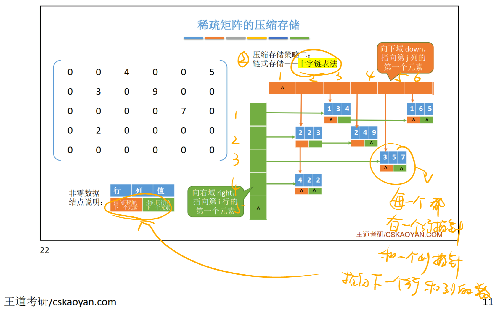

特殊矩阵的压缩存储
一、数组的存储结构
一维数组：a[N]
逻辑上连续存放，物理上（内存中）也连续存放
数组元素a[i]的物理地址=LOC+i*sizeof(ElemType)
二维数组：a[N][M]
逻辑上是n行n列的矩阵，物理上（内存中）是行优先存储和列优先存储的连续存放
行优先存储：数组元素a[i][j]的物理地址=LOC+(i*N+j)*sizeof(ElemType)
列优先存储：数组元素a[i][j]的物理地址=LOC+(J*M+i)*sizeof(ElemType)
普通矩阵的存储可用二维数组存储。
二、特殊矩阵的存储
①对称矩阵 ②三角矩阵 ③三对角矩阵 ④稀疏矩阵
2.1对称矩阵的压缩存储
对称矩阵：a_{i,j}=a_{j,i}
方法：一维数组a[N]只存主对角线+下三角区（或主对角线+上三角区）
存储数组的大小：N=\frac{n(n+1)}{2}
数组下标范围：0 ~ \frac{n(n+1)}{2}-1
行优先存储：数组下标：k=\begin{cases} \frac{i(i-1)}{2}+j-1, \quad i \geq j(下三角区和主对角线元素)\\ \frac{j(j-1)}{2}+i-1, \quad i<j(上三角区元素a_{i,j}=a_{j,i}) \end{cases}
2.2三角矩阵的压缩存储
①下三角矩阵：除主对角线和下三角区，其余的元素都相等
方法：一维数组a[N]存主对角线+下三角区，在最后多加一个位置存常其余相等元素
存储数组的大小：N=\frac{n(n+1)}{2}+1
数组下标范围：0 ~ \frac{n(n+1)}{2}
行优先存储：数组下标：k=\begin{cases} \frac{i(i-1)}{2}+j-1, \quad i \geq j(下三角区和主对角线元素)\\ \frac{n(n+1)}{2}, \quad\quad\quad\quad i<j(上三角区元素) \end{cases}
②上三角矩阵：除主对角线和上三角区，其余的元素都相等
方法：一维数组a[N]存主对角线+下三角区，在最后多加一个位置存常其余相等元素
存储数组的大小：N=\frac{n(n+1)}{2}+1
数组下标范围：0 ~ \frac{n(n+1)}{2}
行优先存储：数组下标：k=\begin{cases} \frac{(i-1)(2n-i+2)}{2}+(j-i), \quad i \geq j(下三角区和主对角线元素)\\ \frac{n(n+1)}{2}, \quad\quad\quad\quad\quad\quad\quad~ i<j(上三角区元素) \end{cases}
2.3三对角矩阵的压缩存储
三对角矩阵，又称带状矩阵。
方法：一维数组a[N]存带状部分
存储数组的大小：N=3n-3+1
数组下标范围：0 ~ 3n-3
行优先存储：
i和j计算数组下标k：k=2i+j-3
数组下标k计算i和j：i=\lceil (k+2)/3 \rceil，j=k-2i+3
2.4稀疏矩阵的压缩存储
稀疏矩阵：非零元素的个数远远少于矩阵元素的个数。
方法一：顺序存储——三元组<行，列，值>，注：行列从1开始
| i（行） | j（列） | v（值） |
|---|---|---|
| 1 | 3 | 4 |
| 1 | 6 | 5 |
| 2 | 2 | 3 |
方法二：链式存储——十字链表法
